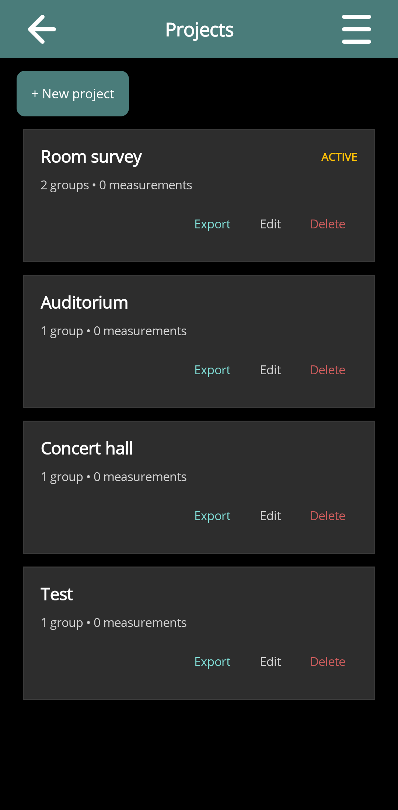
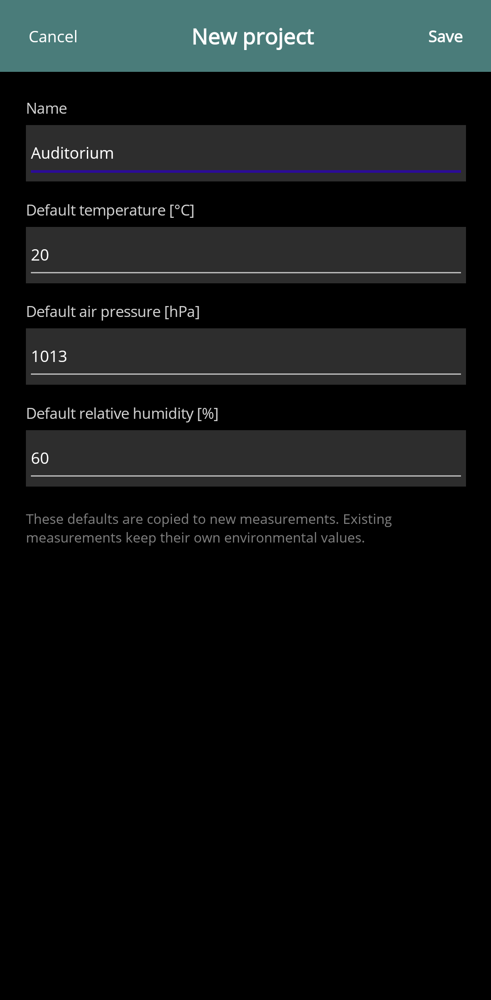
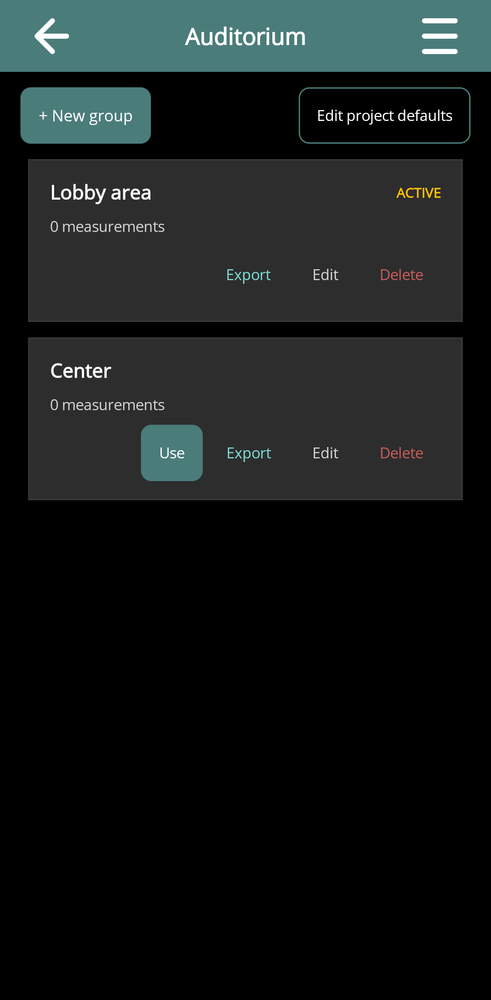
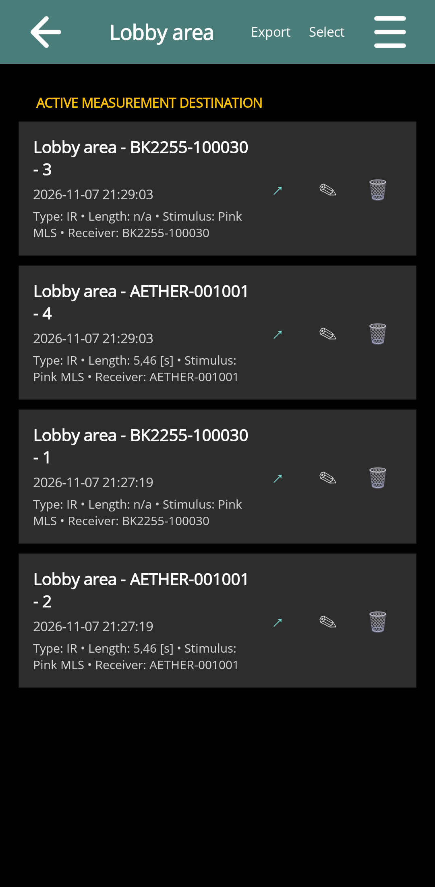
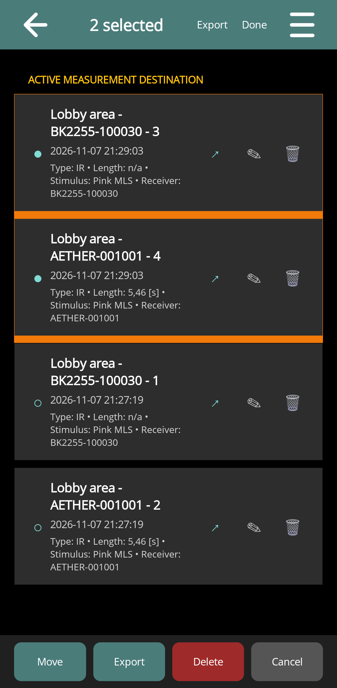
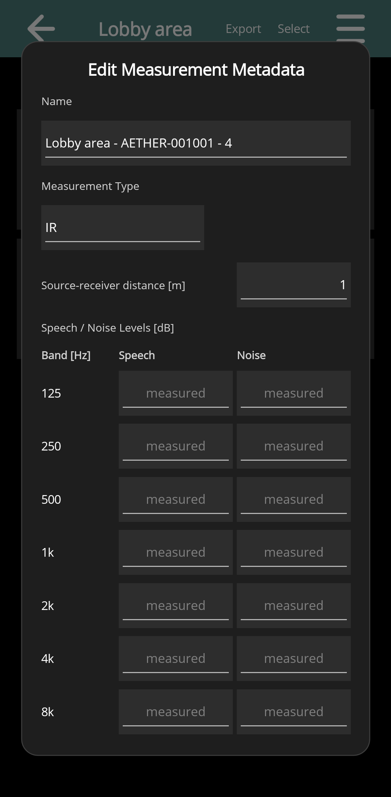

Projects and Measurement Groups
Draft for review: These DIRAC Field instructions and illustrations are being reviewed.
On this page
Projects, groups and measurements
A project holds related work, such as a building or survey. A group collects measurements within that project, for example a room or receiver position. A measurement represents one acquisition and can include separate data from several receivers.
Keep the distinction between measurements stored in the app and recordings still held by the equipment. Exporting an app measurement, deleting it, or changing its group is not the same operation as managing files on the recorder.
Create or edit a project
- Choose Projects from the app menu.
- Tap + New project, enter its name, and enter the default temperature, air pressure and relative humidity for new measurements.
- Tap Save, then open the project.
- Use the project's edit action or Edit project defaults to change these defaults later.
Environmental defaults are copied into new measurements. Existing measurements retain their own environmental values. Enter the conditions for the measurement location, rather than assuming that the initial defaults describe the site.




Create and activate a group
- Open a project and tap + New group.
- Give the group a meaningful name, such as a room, source position or receiver position.
- Use the group's Use action, or open it and choose Use for new measurements.
- Check the active-destination indication and the Save to field when returning to the control page.
The active group is the destination for subsequent acquisitions. Opening another group to inspect old data does not by itself mean that the next acquisition will be saved there. Use the explicit destination action.


Change the destination from a control page
The Save to field shows the active project and group. Its change action opens Save the next measurement to, where you can choose an existing destination or create a new group or project. Recheck the displayed destination before acquiring a new series.
Inspect, move and delete measurements
Open a group to see its measurements and capture summaries. Tap a successful entry to inspect its data. The list includes identifying metadata and acquisition information; an entry with no successful receiver data cannot be opened as a valid recording.
Use the measurement edit action to open Edit Measurement Metadata. Use Select for a batch operation, mark the required measurements, and choose Move, Export or Delete. Done leaves selection mode. The move chooser offers other groups in the same project and can create a new group there.
Read the confirmation before deleting a measurement, group or project. Export data that you need to retain before deleting its app copy. Deleting a parent group or project also affects its contained measurements.
A capture with several receivers creates a separate measurement entry for each receiver. Each receiver entry has its own measurement number. Open, rename, move, export or delete an entry independently of the other receiver results.




Edit measurement metadata
The metadata editor includes the measurement name, Measurement Type, source–receiver distance for successful receiver recordings, and speech/noise level information. Save changes explicitly; Cancel leaves the editor without applying them.
Set the type to Signal for a recording of sound, and to Impulse response only when the stored data actually represent an impulse response. Changing the label does not deconvolve or repair the waveform. The type determines which analysis parameters are offered.
Source–receiver distance is entered in metres. Check the actual distance for each receiver. The default distance can be set in that receiver's Measurement settings; editing an existing measurement is a separate action.


Measurement filenames
New names use the app's configured naming format, including a project/group/fixed prefix and optional source and receiver labels. Configure this under Application Settings. Naming preferences apply to new captures; they do not rename earlier measurements automatically.